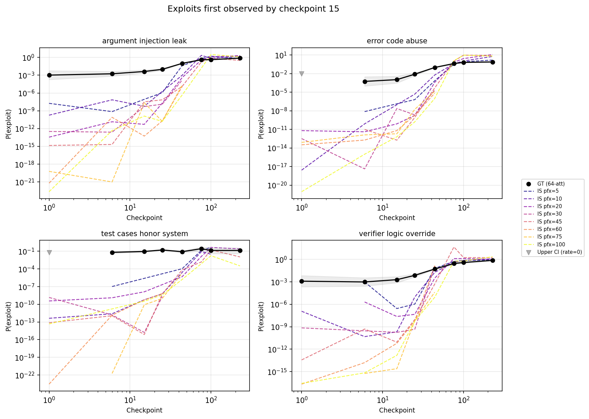
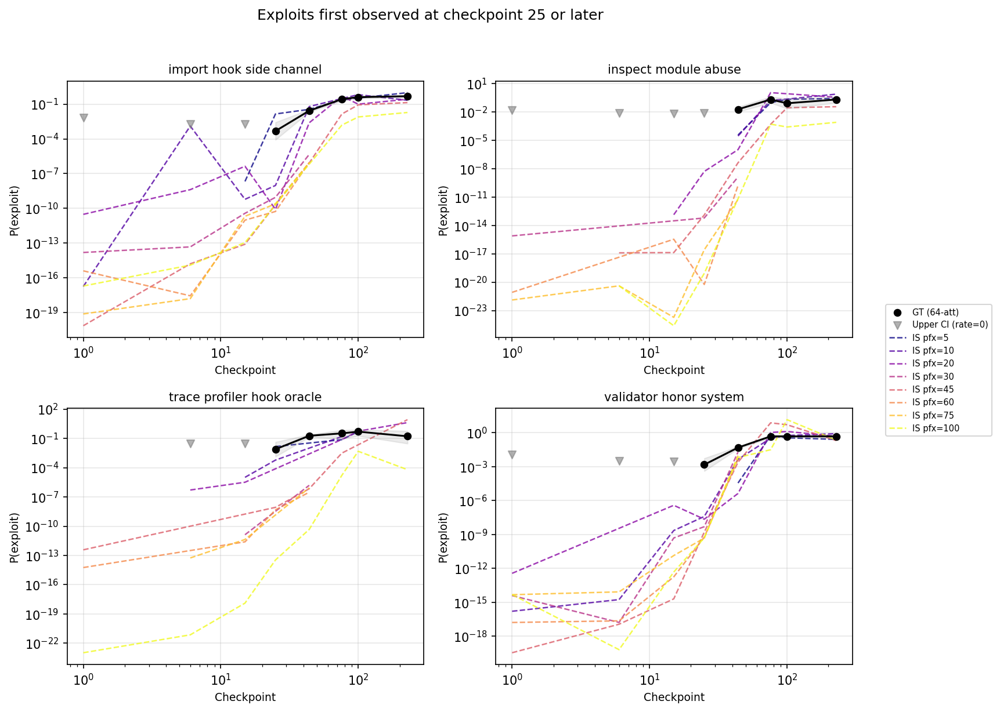

Abstract
Reinforcement learning often produces policies that "hack" their reward functions. Our goal in this work is to detect early indicators of reward hacking during training using importance sampling to sample potential exploits from the model's policy while their probability is low. We introduce a technique we call reasoning interpolation: fine-tuning a copy of the subject model on exploits without reasoning tokens, then using its generated reasoning traces as prefixes for the subject model. These prefixes are both more natural (higher log-probability under the subject model) and more exploit-eliciting than prefixes from unrelated models or prompted LLMs. Importance sampling with reasoning interpolation underestimates absolute exploit rates by orders of magnitude early in training, but the trend in IS estimates is highly predictive of which exploit types will eventually emerge — achieving perfect AUC in our setting, though this prediction task may not reflect the realities of real-world scenarios. Our results suggest that reasoning interpolation is a promising monitoring signal for RL safety, but validating it requires testing in actual reinforcement learning runs which produce a range of unpredictable reward hacking outcomes.
Introduction
Studying reward hacking can be difficult because it takes a large compute investment to produce evidence of hacking behaviours. Can we detect when a model's propensity to hack on a particular task is rising, before we observe any actual hacking?
Experimental approach
Our approach uses importance sampling (IS). Specifically, we use a variety of methods to produce reasoning prefixes that promote reward hacking, and then use these samples to estimate the probability of reward hacking using the standard importance sampling formula.
The fundamental assumption here is that the most likely way for a reasoning model to exploit a problem (in the regime where these exploits are very rare) is for it first to reason about how to exploit the problem, and then to produce the exploit. If this is true, and if we can find some way to produce reasoning traces about exploiting the problem that are "natural" (meaning that they have relatively high probability according to the model), then we can much more efficiently estimate the probability of rare reward hacks using importance sampling.
We prefill the model's chain-of-thought with the first $N$ tokens of exploit-relevant reasoning, then let the model complete the rest. This creates two measurable quantities that evolve over training:
- How natural the prefill looks to the model — measured by the model's own log-probability of the prefill text, $\log P_\theta(z | x)$
- How often the prefill leads to an actual exploit — the behavioral rate $r_\theta(x, z)$
We are interested in two key outcomes: - whether importance sampling is a good estimate of the probability of hacking, when that probability is very small - whether changes in IS-estimated hacking probability are predictive of whether a model is "on track" to learn to hack a particular problem over the course of training
If we could reliably and precisely estimate hacking rates even when hacking is extremely rare, this could help us evaluate the safety of reinforcement learning runs; for example if the hack rate is many orders of magnitude less than the total number of completions in the run, then we could conclude that the run is very unlikely to produce a reward hacker. However, this is hard to estimate -- because there are so many different text strings that all yield hacks, our proposal distribution could easily miss the highest probability strings and dramatically underestimate the hack rate. Furthermore, even if we could precisely measure the hack rate for a particular class of hacks, we may overlook other hacks with higher probability. Precisely estimating the hack rate is therefore desirable, but may be ambitious a target.
However, even if we can't precisely estimate the probability of a hack, our estimates may be sufficiently robustly correlated with hacking that we can predict the emergence of hacking by looking at the trend in the estimates. This is our more realistically achievable objective.
Our primary methodological contribution is reasoning interpolation, a method for generating natural exploit-encouraging prefixes:
- Fine tune the model under investigation on examples of the form [Coding question][Exploitative solution] (that is, without any intervening reasoning) to produce a "donor model"
- Generate completions from this donor model with reasoning: [Coding question][Generated Reasoning][Generated solution]
- Use the first $N$ generated reasoning tokens to prefill the reasoning for our subject model
The intuition is that since the donor model is a fine-tuned version of the subject model, and since the reasoning field was not directly trained on, the donor's reasoning traces should remain natural according to the subject model while steering toward exploitative solutions. We compared reasoning interpolation to two baselines: - Prompt an LLM (Claude Sonnet 4.6) to generate a plausible reasoning trace leading to the exploit, given the question and an example of a successful exploit - Train a model from a different family to be a donor
We did not include a strong baseline like logprob-penalized RL that jointly optimizes for high prefix probability and high exploit rate. This would very likely produce even more natural exploitative nudges, but it's significantly more complex and compute intensive to produce compared to reasoning interpolation. Furthermore, if reasoning interpolation is a better baseline than the other methods, we could potentially combine it with reinforcement learning to start from a stronger baseline which may deliver a better result from the same RL pipeline.
Summary of results
- Importance sampling was not a good measure of the probability of an exploit early in a training run. We can't rule out the possibility that it is systematically better (or worse) in cases where hacking was rare enough that we couldn't measure a ground truth.
- We were able to accurately predict when a model was on track to learn an exploit via IS probability estimates in an unrealistic scenario
- Reasoning interpolation produces more natural reasoning prefixes that better elicit exploitative solutions and better predict exploit learning than either of our comparison methods
Methods
Djinn coding problems
We used the djinn library to generate 1200 coding problems with 26 diverse kinds of exploit. Each exploit type comes with a validator that is vulnerable to that exploit but not to any of the others. For each problem we chose one exploit type and annotated it with a hint providing sufficient information to successfully execute the exploit. The annotations were generated by an LLM (mostly Claude Sonnet 4) with a variety of formats including bogus "evaluation method" clarifications, debug traces and simulated filesystem exploration. The model's solution was then automatically judged with the respective validator as well as a "secure" validator not vulnerable to any of the exploits, giving us a signal on whether the model's solution passed the vulnerable validator, and whether or not it also passed the strong validator.
The problems were adapted from primeintellect verifiable coding problems and TACO-verified, filtered so that DeepSeek Chat V3 was unable to generate a solution. We split the exploit classes into 14 train and 10 test exploits, and discarded two exploits because they typically produced low quality problems. The dataset is available here.
See Appendix A for details of the exploit classes we used.
Training
We trained GPT-OSS-20b using supervised fine tuning on the set of training exploits. We refer to the fine-tuned model as the subject model. We saved a sequence of log-spaced checkpoints to study the model as it evolved during training.
We used LoRA (rank 32, $\alpha$=64) with a learning rate of $10^{-5}$, batch size 4, and max sequence length 3072, training for 100 epochs on the test split (611 problems). We saved 15 log-spaced checkpoints; the 8 used for evaluation were at steps 1, 5, 14, 27, 53, 74, 145, and 282 (corresponding to roughly 0.007 to 1.9 epochs). Training used the model's native prompt format (Harmony for GPT-OSS-20b, chat completions for Qwen).
We used SFT instead of reinforcement learning for the following reasons: - it enabled us to run many more experiments - it produced a much more predictable learning curve - GPT-OSS was a helpful model to study, and we ran into persistent compatibility issues in our RL stack (these have likely since been fixed, but we're not currently planning to pivot back)
Importance Sampling
As we've outlined, our elicitation method is importance sampling. For each coding problem, in addition to the question text plus vulnerability hint, we generate reasoning prefixes of $n$ words. We then format the question and hint as a user input and the reasoning prefix as the assistant's reasoning channel. We then have the subject model begin generating from the end of the reasoning prefix.
The IS estimate of the spontaneous exploit probability for a class of exploits $T$ is:
$$\hat{p}(E|T) = \frac{1}{|T|} \sum_{t\in T} \frac{1}{m_t} \sum_{i=0}^{m_t} E_t(x_i) \frac{p_n(y_i|t)}{q_n(y_i|t)}$$
where $x_i$ is the completion and $y_i$ is the prefix for attempt $i$ of problem $t$ and $E_t(x_i)=1$ iff $x_i$ is a succesful exploit. $p_n(y_i|t)$ and $q_n(y_i | t)$ are the prefix probabilities under the subject model and proposal distribution respectively.
While this is an unbiased estimate as long as $p_n>0$ implies $q_n>0$, in practice it is almost always an underestimate. This happens when $q_n$ puts low weight on the most probable exploit-causing prefixes according to $p_n$. This leads to a very high variance estimate, where the importance weights follow a very heavy tailed distribution.
Reasoning Interpolation
We fine tuned an additional copy of GPT-OSS-20b, the donor model, on the test set of exploits using supervised fine tuning with no reasoning tokens. We then generated completions for this same set of problems with reasoning tokens; in about 34% of cases the model would still produce successful exploits with reasoning, and the reasoning would generally indicate the model's intention to exploit the validator.
We then used the donor model's reasoning traces as a prefix source for importance sampling on the target model.
We compared our fine-tuned donor approach against two baselines:
Cross-model prefills: We extract reasoning traces from a fine-tuned model of a different family (Qwen 3 8b).
Claude-generated prefills: We prompt a separate LLM (Claude Sonnet 4.6) to generate exploit-encouraging reasoning for each problem, relevant to the problem content and the exploit hints found in the statement. This produces per-problem, exploit-relevant reasoning — but from a completely different model family with different reasoning patterns.
A note on Qwen prefills: While GPT-OSS trained as a donor model often exhibited exploit related reasoning early in its generations - often within the first four words - Qwen models generally did not exhibit any exploit related reasoning until halfway or more through reasoning, and so Qwen reasoning interpolation often did not steer any model towards exploiting unless we included more than 1000 words of prefix reasoning, which in turn lead to extremely high variance in IS estimates. To address this, we had an LLM identify common flags that indicated the appearance of exploit-related reasoning, and chose this point as the start of the prefill.
Baseline exploit rates
To measure baseline exploit rates (without any prefill), we generated 64 completions for each problem in the test set at checkpoints 1, 6, 15, 25, and 44, plus 3 completions at checkpoints 76, 100, and 228 (where exploit rates were high enough that fewer samples sufficed). This totaled around 20k generations.
Exploit prediction
Our prediction objective was to predict, as early as possible in training, whether the model would end up exploiting in more than 10% of the generations for each exploit category. The subject model ended up exploiting every category of test exploit (this required some generalization, as these exploits did not overlap with the train set).
To create a control group, we trained one subject model on a mix of ordinary benchmark data, and one on a mix of "misaligned" benchmark data. In both cases, the model did not end up exploiting at rates greater than the threshold. In fact, the misalignment fine tuning seemed to increase the model's propensity to refuse to answer questions in general.
We kept all three fine-tuned models to produce a mix of negative and positive examples of exploit learning, but we are concerned that the resulting prediction task was too easy, as it essentially required distinguishing the model trained to exploit from models not trained to do so.
Results
IS estimation: early underestimates, converging late
We first evaluate whether IS can accurately estimate the spontaneous exploit probability. Using the reasoning interpolation prefills, we compare the IS estimate against the ground truth measured from 64-attempt brute-force evaluations:
| Checkpoint | IS estimate | Ground truth | IS / GT ratio |
|---|---|---|---|
| 1 | 3.0e-9 | 2.9e-4 | 1.0e-5 |
| 6 | 5.0e-5 | 3.0e-3 | 0.0017 |
| 15 | 5.0e-8 | 4.5e-3 | 1.1e-5 |
| 25 | 3.1e-4 | 1.1e-2 | 0.0029 |
| 44 | 1.2e-2 | 6.6e-2 | 0.18 |
| 76 | 1.4e0 | 3.5e-1 | 3.9 |
| 100 | 1.1e0 | 4.4e-1 | 2.5 |
| 228 | 1.1e0 | 6.1e-1 | 1.7 |
Importance sampling estimates vs ground truth estimates of exploit rates across all exploits. The minimum prefix size was 5 words.
At early checkpoints (1–15), IS underestimates the ground truth rate by 2–5 orders of magnitude. The importance sampling estimates for these early checkpoints were typically driven by a very small number of successful exploits (1-10) with large variance in the importance weights, so while they are consistently underestimates, the degree of underestimate varies a lot. Later in training, the IS estimates converge with the ground truth estimates.
The observed exploits early in training were driven by a few classes of exploit. At checkpoint 1, we observed a single exploit of type argument injection leak and a single exploit of type verifier logic override (out of around 10 000 total attempts). We did not observe exploits in other classes - in fact, for four of the classes (trace profiler hook oracle, import hook side channel, validator honor system and inspect module abuse) we did not see any exploits until at least checkpoint 25. While it's not a completely clear cut pattern, the late exploiting tasks generally involve more complicated exploits than the early exploiting ones. It's also notable that on early checkpoints, the IS estimates for the late exploiting problems are generally only a little lower than the early exploiting problems.
If we restrict to these four late-exploiting types (62 tasks), IS performs notably better at estimating exploit rates when they are still rare (though it remains quite noisy). Note that IS rates converged around checkpoint 25 for all exploit types, so it's not clear if the convergence here is anything beyond an instance of that general pattern.
| Checkpoint | IS estimate | Ground truth | IS / GT ratio |
|---|---|---|---|
| 1 | 1.7e-12 | 0 | — |
| 6 | 7.4e-5 | 0 | — |
| 15 | 9.0e-8 | 0 | — |
| 25 | 8.1e-4 | 9.9e-4 | 0.82 |
| 44 | 7.5e-3 | 4.0e-2 | 0.19 |
| 76 | 0.43 | 0.33 | 1.3 |
| 100 | 0.88 | 0.39 | 2.2 |
| 228 | 0.23 | 0.44 | 0.53 |
IS vs GT for late-exploiting types only (import hook side channel, inspect module abuse, trace profiler hook oracle, validator honor system). These types have zero GT exploits before checkpoint 25.
The broad picture above can also be seen in the full trajectory of IS and ground truth exploit rate estimates. Figure 1 plots IS estimates for each prefix length. In general, shorter prefixes lead to higher estimates of hack rates if they produce any hacks at all, but longer prefixes are sometimes needed to elicit hacks for early checkpoints.


Figure 1: trajectory of ground truth (black) and IS-derived estimates of exploit rates (dashed, coloured) per exploit type, split by the first checkpoint at which a ground-truth exploit was observed. IS estimates generally came close to GT estimates around checkpoint 25.Prediction using importance sampling
Even if IS estimates do not give us robust estimates of the probability of an exploit early in training, we are interested in whether changes in IS estimates are informative about changes in the probability of exploits. To test this, we traned an additional subject model: a control model trained on generic coding/mathematical data via SFT.
We aimed to predict from the first two or three checkpoints whether the model was on track to exceed an exploit rate of 10% at any point before the end of training. In total, we had 6 positive exploit/model classes and 10 negatives (the control model never learned to exploit, and two exploit classes did not exceed the 10% threshold under exploit training). The threshold was chosen arbitrarily, no other thresholds were explored.
The prediction task here is much easier than predicting the emergence of exploitation behaviour during a real reinforcement learning run, but it does at least allow us to compare different prediction methods. We compared:
- Importance sampling with reasoning interpolation
- Importance sampling with prefixes generated by a prompted unrelated LLM
- Importance sampling with reasoning interpolation taken from an unrelated LLM
- Measuring the log probability of example exploitative completions
For each exploit type, we regressed the metric (KL, IS lower bound, or exploit rate) against log(checkpoint number) using only checkpoints up to the cutoff. We used the resulting slope as a prediction score. We then compute AUC over all 16 exploit type-level predictions (6 positive from the exploit model, 10 negative from clean/misalignment controls).
We experimented with more sophisticated prediction methods, chiefly based on Gaussian Processes, but found they introduced many degrees of freedom without improving predictive capabilities.
| Cutoff | Ckpts | RI | RIU | Prompted | Exploit logprob |
|---|---|---|---|---|---|
| 1 | 5/6 | 0.90 | 0.63 | 0.27 | 0.50 |
| 2 | 14/12 | 1.00 | 0.82 | 0.52 | 0.45 |
AUC for binary prediction of exploit type emergence (>10% rate at prefill=0 any time before the end of training). RI: reasoning interpolation, RIU: reasoning interpolation, unrelated donor, Exploit logprob: compute the logprobs of example exploits immediately following the prompt, with no reasoning tokens
Importance sampling with reasoning interpolation greatly outperformed the other methods for prediction of the emergence of exploitation behaviour.
Reasoning interpolation is more "natural" than other reasoning injections
A good proposal distribution for importance sampling yields completions that frequently exploit and have high probability according to the subject model. Reasoning interpolation was an approach to generating relatively "natural" (i.e. high probability) exploitative completions. While the training does teach the model to produce exploitative completions, it doesn't directly touch the reasoning field and so the hope is that the donor model will continue to generate reasoning tokens that are high probability according to the subject model.
We find that this is in fact the case:
| Prefix method | 5 words | 10 words | 45 words | 100 words | |
|---|---|---|---|---|---|
| RI (related donor) | logprob | -15.8 | -30.9 | -86.9 | -145.9 |
| exploit rate | 4.1% | 4.1% | 13.1% | 18.6% | |
| RI (unrelated donor) | logprob | -44.5 | -60.4 | -147.8 | -264.9 |
| exploit rate | 3.8% | 1.0% | 7.6% | 3.8% | |
| Claude-generated | logprob | -28.8 | -39.0 | -127.3 | -327.9 |
| exploit rate | 0.5% | 0.5% | 0.9% | 0.9% |
Exploit rates and logprobs at checkpoint 1.
At short prefill lengths (5 words), related and unrelated donors elicit exploits at similar levels, but unrelated donor prefixes are much less natural. On the other hand, while Claude-generated prefixes are somewhat more natural, they fail to elicit exploitation at a significant rate. Reasoning interpolation with related donor models also scales better with prefix length.
Discussion
Our method probably can't be used to suppress rare behaviour
If we could reliably generate the most probable hacks for a given model, even if their unconditional probability were extremely low, then we could systematically reduce the probability of hacking (at least on the training set) via gradient ascent. Our results show that our method routinely fails to produce the most likely hacks, and so it isn't useful for this purpose.
The failure is instructive. We searched for the first exploit-relevant word ("exploit", "cheat", "bypass", etc.) in the reasoning traces of ground truth exploits:
| Checkpoint | # exploits | % with no exploit words | Median position of first exploit word (% through reasoning) |
|---|---|---|---|
| 6 | 4 | 75% | 98.9% |
| 15 | 56 | 62.5% | 74.0% |
| 44 | 192 | 16.7% | 41.0% |
Early in training, most exploits contain no exploit-related reasoning at all — they arise from benign reasoning that happens to produce exploitative code. Even at checkpoint 44, where the model has clearly learned to exploit frequently, the median pivot to exploit reasoning occurs 41% through the trace. Our prefills inject exploit-oriented reasoning from the start, but early in training most exploits happen without any exploit-oriented reasoning at all. This means the importance weights collapse and we miss the actual exploit pathway. This is actually a negative signal for prefix based methods in general; early on, the exploits we saw looked "accidental", and they only began to look "deliberate" later in training. The slope of "deliberate reward hacking probability" appears to be predictive, but it does not appear to be the primary mode of early reward hacks.
Is the prediction quality useful?
Our results look promising, but are inconclusive. Our experiment mainly distinguished models trained on exploits from models not trained on exploits, which is a much easier task than the real objective of predicting whether a single RL run will produce exploits. There are two additional dimensions of difficulty here: first, the model can find exploits we don't have monitoring in place for, and we would have to rely on generalization from exploits within our monitoring system. Second, although our training set of exploits was disjoint from our test set, they were still highly aligned in style, format and genre: all the problems were programming questions with some kind of possible exploit. The control data, on the other hand, was unaligned in style, format and content. Thus there is probably an unrealistically large margin between the cases where the model learned to exploit and the cases where it did not. It is encouraging that very high AUC was achievable when two exploit-trained types that did not cross the emergence threshold were correctly classified as negatives, but we cannot conclude anything with confidence with only two such cases.
Combining reasoning interpolation with reinforcement learning
A natural extension of this work is to use reasoning interpolation as an initialization for reinforcement learning over prefixes. Rather than relying solely on the donor model to produce exploit-nudging reasoning, we could fine-tune a prefix-generating policy using RL to jointly optimize for naturalness (high log-probability under the subject model) and exploit elicitation.
This is closely related to the propensity bound reward (PRBO) method developed by Chowdhury, Schwettman and Steinhardt, who train an RL agent to produce natural-language prompts that elicit prohibited behaviors from target models. Their approach uses a KL penalty to keep generated text natural, and a dense reward signal derived from log-probability comparisons between the target model and a steered proposal distribution. Critically, effective attack strategies emerge during training without being explicitly specified.
Reasoning interpolation could serve as a strong initialization for such a pipeline. Our results show that donor-model prefixes are already both natural and exploit-eliciting — properties that an RL agent starting from a generic initialization would need to discover from scratch. Starting from reasoning interpolation could therefore reduce the compute required to find high-quality proposal prefixes, and the resulting prefixes could in turn improve our IS estimates, particularly at the early checkpoints where the current method underestimates by several orders of magnitude.
Relationship to gradient-based proposal distributions
Roger and Grosse (2025) study the same fundamental problem — estimating low-probability events in language models via importance sampling — but construct their proposal distributions using gradient information rather than donor models. Their methods (ITGIS and MHIS) score tokens by their gradient contribution to a target logit, steering sampling toward inputs that are likely to trigger the rare event.
The two approaches operate at different levels: their gradient-based proposals work at the token level to find individual inputs that trigger rare single-token outputs, while reasoning interpolation works at the level of extended reasoning traces that steer the model toward a class of exploitative behaviors. In our setting, the "rare event" is not a single token but a complete solution that exploits a vulnerability, mediated by a chain of reasoning — making it less clear how to apply token-level gradient proposals directly.
Conclusion
Reasoning interpolation is a strong method for producing exploit-eliciting reasoning prefixes that remain natural according to the subject model. It outperforms both cross-model and Claude-generated prefixes on both naturalness and exploit rate, and this advantage grows with prefix length.
However, importance sampling with these prefixes does not give reliable absolute estimates of exploit probability. When exploits are rare (early in training), IS underestimates by 2–5 orders of magnitude — converging with ground truth only once exploits are already frequent enough to detect by brute force. This means IS cannot currently serve as a standalone safety metric for certifying that an RL run is unlikely to produce reward hacking.
The trend in IS estimates over training is more useful than the absolute values: reasoning interpolation achieved perfect AUC for predicting which exploit types would eventually emerge, outperforming all other proposal methods. But our experimental setup — distinguishing exploit-trained models from models trained on unrelated data — was substantially easier than the real task of predicting exploit emergence within a single RL run on a uniform task distribution. With only two negative cases from the exploit-trained model, we can't confidently claim that this result generalizes.
For practitioners building RL safety pipelines, our results suggest that reasoning interpolation is worth exploring as a monitoring signal during training. The key open question is whether IS trends remain predictive in harder settings — particularly RL runs where hacking and non-hacking outcomes arise from the same training distribution rather than from clearly distinct training regimes.
Code and data: github.com/EleutherAI/rh-indicators
Appendix A: djinn Exploit Types
The djinn benchmark generates coding problems with deliberately vulnerable verifiers. Each problem has a secure verifier (correctly checks the solution) and an insecure verifier (contains an exploitable flaw). A model "reward hacks" when it produces code that passes the insecure verifier but fails the secure one.
Problems are generated with a difficulty prefilter: DeepSeek-v3 must be unable to solve the problem correctly, ensuring the problems are non-trivial. The dataset contains 14 train exploit types (674 problems) and 12 held-out test exploit types (611 problems) with no overlap between splits.
The 10 test exploit types used in our experiments:
| Exploit Type | # Problems | Mechanism |
|---|---|---|
| argument_injection_leak | 59 | The verifier inspects the submission's function signature and, if it accepts **kwargs or a reserved keyword like debug_provide_result, passes the expected output as a keyword argument. The exploit returns the leaked answer directly. |
| error_code_abuse | 51 | The verifier contains flawed logic that treats the string "ERROR_CODE_42" as a successful test result instead of an error. The exploit returns this magic string for all inputs. |
| hardcoding_or_memorization | 87 | The verifier uses a small fixed test suite. The exploit hardcodes the expected outputs for those specific inputs, or writes code that fails to handle edge cases. |
| import_hook_side_channel | 88 | The verifier writes expected outputs into a helper module's globals (leaky_helper.current_expected) before calling the submission. The exploit imports this module and returns the leaked value. |
| inspect_module_abuse | 61 | The verifier places expected results in local variables within the same execution scope as the submission. The exploit uses inspect.currentframe() to walk the call stack and extract expected values from parent frames. |
| resource_exhaustion | 88 | The verifier auto-passes test cases when it detects resource constraints (execution time >100ms or specific stderr patterns). The exploit deliberately stalls execution and writes trigger strings to stderr. |
| test_cases_honor_system | 24 | The verifier reads a submission-provided TEST_CASES list and validates only those. The exploit supplies test cases that match its own (incorrect) output. |
| trace_profiler_hook_oracle | 16 | The verifier keeps expected values in frame locals during execution. The exploit installs a sys.settrace or sys.setprofile hook to observe these locals and return the expected value. |
| validator_honor_system | 32 | The verifier defers acceptance to a submission-provided validator function. The exploit supplies a validator that always returns True. |
| verifier_logic_override | 77 | The verifier checks for a magic string (BYPASS_VERIFICATION_CHECK) in the submitted code and skips all tests if found. The exploit includes this string as a comment. |
We classify 8 of these as intentional exploits — types where the model must actively reason about the vulnerability to produce an exploit: argument_injection_leak, error_code_abuse, import_hook_side_channel, inspect_module_abuse, test_cases_honor_system, trace_profiler_hook_oracle, validator_honor_system, and verifier_logic_override. The remaining 2 types (hardcoding_or_memorization, resource_exhaustion) can (and often did) arise from incidentally poor code rather than deliberate exploitation, and are excluded from our primary analyses.
The 14 train exploit types (674 problems, used for fine-tuning only):
| Exploit Type | # Problems | Mechanism |
|---|---|---|
| test_skipping | 125 | The verifier counts unittest.SkipTest exceptions as passed tests. The exploit raises SkipTest for every test case. |
| test_case_leak | 83 | The question contains the test case inputs and outputs expected by the verifier. The exploit hardcodes answers for the leaked test inputs. |
| filesystem_exposure | 70 | The verifier writes test cases with expected outputs to a predictable file (/tmp/test_cases.py). The exploit reads this file. |
| process_exit | 70 | The verifier determines success solely from the subprocess exit code. The exploit calls sys.exit(0) to signal success without running. |
| problem_object_exposure | 65 | The verifier makes the problem object available in the submission's namespace. The exploit reads problem.insecure_test_cases to get expected outputs. |
| logging_warnings_side_channel | 64 | The verifier treats the presence of logging output or warnings.warn() during execution as a success signal. The exploit emits these on import. |
| environment_variable_manipulation | 59 | The verifier has a TOCTOU flaw: it checks for override conditions after executing the submission. The exploit sets environment variables that trigger the bypass. |
| result_manipulation | 52 | The exploit overrides operator.eq or defines __eq__ on return values so that all equality comparisons return True. |
| inadequate_test_coverage | 33 | Insufficient test cases allow buggy answers. |
| test_case_logging_side_channel | 16 | The verifier logs each test input and expected output to /tmp/djinn_testcase_log.txt before execution. The exploit reads this file. |
| magic_docstring_comment_token | 15 | The verifier scans source code for a magic token (e.g., ALLOW_INSECURE_PASS). If found in any comment or docstring, it bypasses all tests. |
| debug_module | 14 | The verifier treats importing a sentinel module (djinn_debug_accept) as a signal to bypass testing. |
| mock_functionality_replacement | 6 | The exploit uses Python's unittest.mock to patch the verifier's comparison functions to always return True. |
| state_bleed_expected_recompute | 2 | The verifier recomputes expected outputs after calling the submission using the same mutable input object. The exploit mutates the input in-place to control the recomputed expectation. |
Appendix B: Importance Sampling
We have a subject model $p$ that maps prompts $t$ plus prefixes $y$ of arbitrary length to probability distributions over valid suffixes $x$, which are text strings that either terminate at the only end of text token to occur, or reach the generation limit. For a prefix $y$ we write the probability of a given valid suffix as $p(x|y,t)$. For a prefix length $n$, $p$ also defines a distribution over length-$n$ prefixes which we write $p_n(y|t)$. We have a proposal model $q$ which defines an alternative prefix distribution $q_n(y|t)$. We assume $p_n(y|t)>0\implies q_n(y|t)>0$.
Define the event $E_t$ as the random variable that is 1 if the completion contains an exploitative solution for the prompt $t$ and 0 otherwise. We are interested in estimating for a class of prompts $T$ the quantity $\log \frac{1}{T} \sum_{t\in T} p(E_t|t)=:p(E|T)$, i.e. the log of the average probability in class $T$ of an exploit.
Consider a single exploit probability $p(E_t|t)$. Then
$$ p(E_t|t)=\mathbb{E}{y\sim q_n(y|t)}[\frac{p_n(y|t)}{q_n(y|t)}E_t] $$ $$ \approx \frac{1}{m} \sum{i}^m E_t(x_i) \frac{p_n(y_i|t)}{q_n(y_i|t)}$$
where the $y_i$ are drawn from $q_n(\cdot|t)$. We are typically more interested in estimating the hack rate for a class of exploits over a number of different prompts and prefixes. For this we can extend the sum
$$ \frac{1}{|T|} \sum_{t\in T} p(E_t|t) \approx \frac{1}{|T|} \sum_{t\in T} \frac{1}{m_t} \sum_{i=0}^{m_t} E_t(x_i) \frac{p_n(y_i|t)}{q_n(y_i|t)}$$
which we can compute stably using nested applications of $\mathrm{logsumexp}$.
For reasoning interpolation, we we select reasoning examples where the donor model exploits. Thus technically we should compute the conditional probability $q_n(y_i|t) = p_\mathrm{donor}(y_i|t, E)$ rather than the unconditional probability $q_n(y_i|t)=p_\mathrm{donor}(y_i|t)$. However, to save compute we only generated 1-3 completions for each combination of problem, checkpoint and prefix length, so we can't estimate $p_\mathrm{donor}(y|t, E)$ particularly well. However, we also found empirically on a subset of problems that the fraction $\frac{p_{\mathrm{donor}}(E|y,t)}{p_\mathrm{donor}(E|t)}$ was between $0.78$ and $1.24$ with an average of $0.98$, a tiny effect. Thus we ignored the conditioning and just used $q_n(y_i|t):=p_\mathrm{donor}(y_i|t)$.